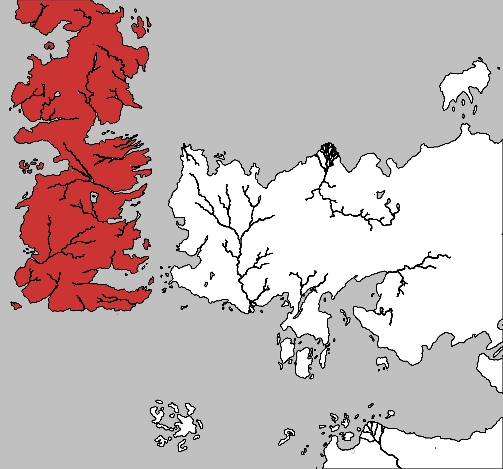

Westeros
Westeros is one of the three known continents in the world. Most of its area is covered by a political entity known as the Seven Kingdoms. Two other continents that share the world in which Westeros resides are Essos, a vast continent, lies in the east across the Narrow Sea, and Sothoros, south east of Westeros across the Summer Sea. The closest foreign nations to Westeros are the Free Cities, a collection of independent city-states along the western edge of Essos. The lands along the southern coastline, collectively called the Lands of the Summer Sea, include Ghis and the ruins of Valyria, the former home of Westeros’s Targaryen kings. To the south of Westeros lie the Summer Islands.
The continent of Westeros is long and relatively narrow, extending from Dorne in the south to the Lands of Always Winter in the far north, where a large amount of land remains uncharted, due to the extremely cold temperatures and hostile inhabitants known as wildlings. Although no scale appears on the maps in the books themselves, George R. R. Martin has stated that the Wall is a hundred leagues long, or three hundred miles. Thus the continent stretches for about 3,000 miles from north to south and for some 900 miles at its widest point east to west.
Its eastern coast borders on the Narrow Sea; across those waters lies the eastern continent of Essos and the island chain known as the Stepstones. To the south is located the Summer Sea, and within it the Summer Islands.
The northern lands of Westeros are less densely populated than the south despite their roughly equivalent size. The five major cities of Westeros are, in order of size: King’s Landing, Oldtown, Lannisport, Gulltown, and White Harbour.
Westeros was originally divided into several independent kingdoms before the consolidation of the War of Conquest. After this war and the eventual incorporation of Dorne, all the regions south of the Wall were united under the rule of House Targaryen into a nation that is known as the Seven Kingdoms.
Map on Next page.
